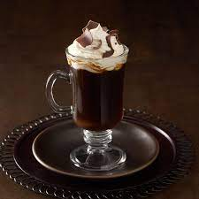

Coffe

Finished Spanish Coffee drink
Great alcoholic coffee drink for cold nights
Ingredients
- 1½ teaspoons superfine sugar
- wine glass or Irish coffee mug 1 fluid ounce 151-proof rum
- ¾ fluid ounce triple sec (such as Bols®)
- 2½ fluid ounces coffee-flavored liqueur (such as Kahlua®)
- ½ cup freshly brewed coffee
Steps
-
Pour sugar into a shallow dish. Wet the rim of the glass and dip in
sugar to coat. Add rum and triple sec. Use a long match or lighter to
carefully ignite the mixture. Turn glass slowly until sugar begins to
caramelize. Pour in coffee liqueur to put out the flame. Top with hot
coffee.